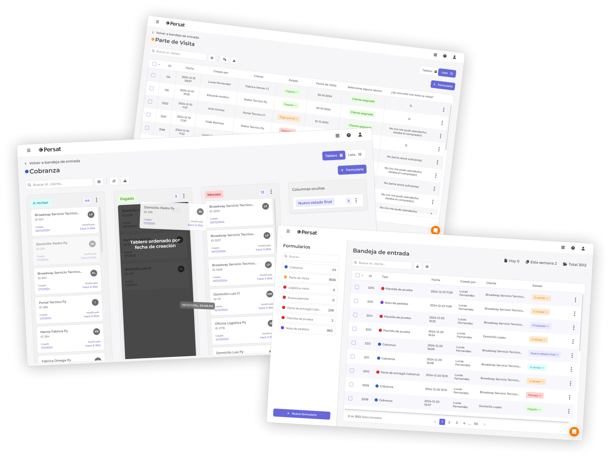
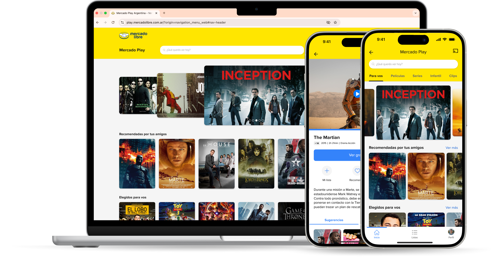

Senior Product Designer con más de 6 años en fintech, banca, SaaS y crypto. Investigo, defino y escalo productos que la gente entiende y que el negocio necesita.


El home banking de ICBC, rediseñado de punta a punta: audité cada flujo, apliqué el nuevo design system y resolví los problemas de usabilidad que frenaban a los clientes.
Ver caso →Persat tenía la tecnología para liderar la gestión de campo. Le faltaba diseño y una visión de producto para aprovecharla al máximo.
Ver caso →La marca y la plataforma modular que le permiten a cualquier empresa lanzar su app de crypto, banking o fan engagement sin construir todo desde cero.
Ver caso →Cuatro terapias, dos tamaños de pantalla y usuarias que aprendían el equipo leyendo el manual. El rediseño de hardware y software que unificó toda la línea, reconocido con el Sello de Buen Diseño.
Ver caso →Senior Product Designer con más de 6 años de experiencia diseñando productos digitales end-to-end. Especializado en UX/UI, Product Discovery, UX Research y Design Systems, liderando iniciativas desde la investigación y definición de la estrategia hasta el diseño, validación e implementación.
Cuento con experiencia en las industrias fintech, banca, SaaS y crypto, creando soluciones centradas en el usuario que generan impacto tanto en la experiencia como en los objetivos del negocio.